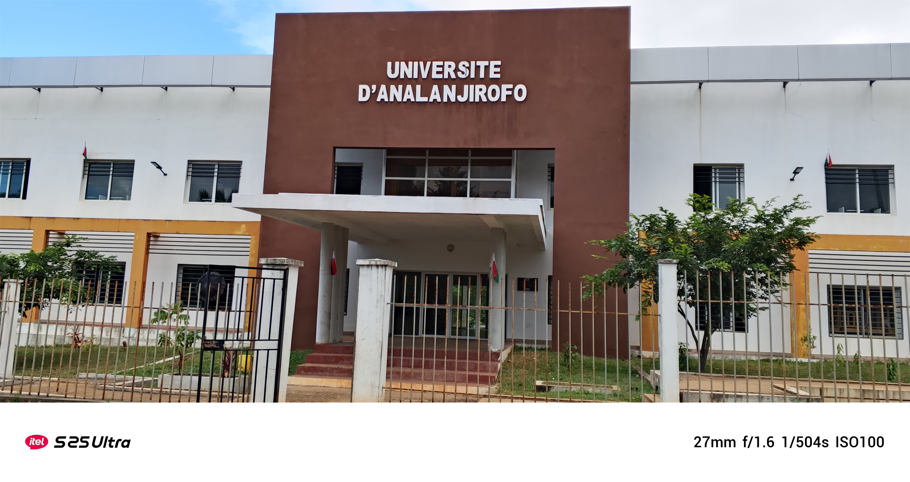

L'institut Superieur du Tourisme de l'Universite d'Analanjirofo, initie l'année 2025, est localisé à 3km au sud de la ville de Fénérive-Est sur la route nationale (RN5), vers Toamasina.
notre objectif
Former des jeunes dynamiques, bien formés et prêts à travailler dans le domaine du tourisme et de l'hotellerie, à Madagascar ou à l'international.

Qui sommes-nous?
l'Institut Superieur du Tourisme Analanjirofo ista est un jeune établissement public d'enseignement supérieur, crée pour répondre au besoin de formation de cadres compétents dans le secteur du tourisme, en particulier dans la région Analanjirofo riche en paysage naturel, culturel, biodiversité et attraits touristiques uniques.

pourquoi choisir l'ISTA?
Formation pratique et adaptée à notre région. Encadrement par des professionnels passionnés. Stage dès la 1er année. Débouchés varies dans un secteur en pleine croissance. Diplôme reconnu avec poursuite d'études possible.
Un parcours Universitaire
Première année : les bases des cours sur le tourisme, la culture, l'environnement, la communication et les langues étrangères.
Stage d'immersion dans les hôtels, offices de tourisme, réserves naturelles, compagnies de transport, etc
Objectif : découvrir les métiers du tourisme.
Deuxième année : spécialisation
Choix entre deux parcours :
- Management Hôtelerie : gestion d'hôtel, accueil, organisation des services.
- Gestion Touristique : création de circuits, promotion et gestion de sites touristiques.
Troisième année:
- Approfondissement des compétences
- Projet de fin d'études.
- Licence en Tourisme délivrée aux étudiants ayant validé le cursus.
Débouchés Professionnels
- Agence de voyages
- Guide touristique
- Responsable de site ou parc naturel
- Réceptionniste/manager d'hôtel
- Chef de projet touristique
- Animateur culturel
- Entrepreneur touristique